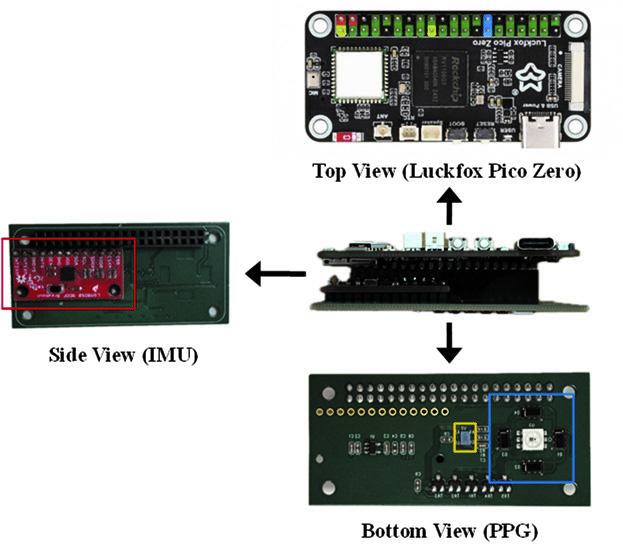
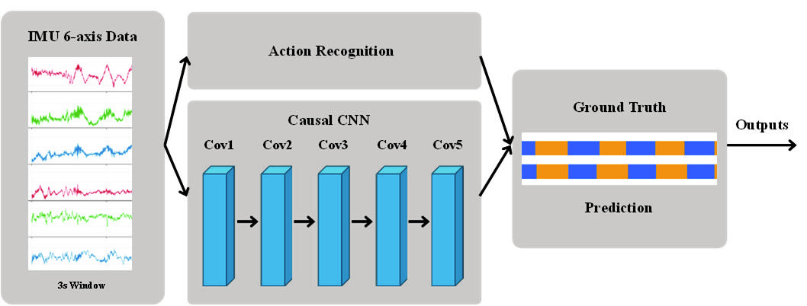
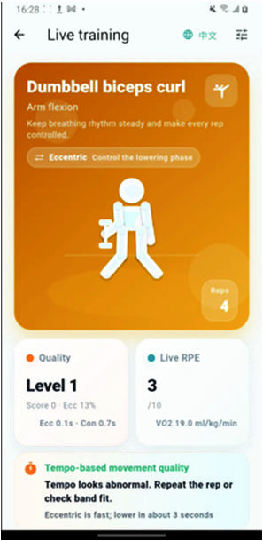
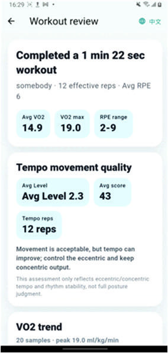
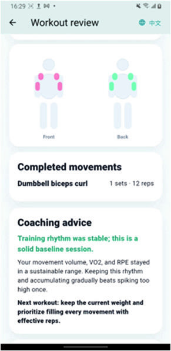

Embedded AI · Wearable System
Smart Wearable Resistance Training System
A wrist-worn research system combining IMU and five-wavelength PPG to recognize eight resistance-training exercises, analyze movement tempo, and estimate perceived exertion, with on-device inference and mobile feedback.

Overview
Resistance-training logs often capture weight, sets, and repetitions but miss how each repetition is performed and how demanding it feels. This team research project combines motion analysis and perceived-load estimation in a single wrist-worn device.
Research manuscript: IMU and Multispectral PPG-Based Wearable System for Motion and Physiological Load Assessment in Resistance Training. The methods, figures, and results below follow the supplied manuscript; Chi-Hung Yang is a co-author.
Sensing & hardware
The 75.5 × 46.0 × 29.7 mm prototype integrates a custom PCB, a 3D-printed enclosure, a lithium-ion battery, and a Luckfox Pico Zero. Its LSM9DS0 nine-axis IMU supplies three-axis acceleration and three-axis angular velocity to the motion model.
The reflectance PPG module uses 670, 770, 810, 850, and 950 nm light, four photodiodes, and an ADPD4101 analog front end. Synchronized IMU and optical signals are processed on the device, and results are sent to the smartphone via Bluetooth.

Movement analysis
A causal CNN processes approximately three seconds of six-axis IMU data using current and past signals. It first estimates movement phases, then reconstructs complete repetitions from their temporal order. Outputs include exercise type, repetition count, time under tension (TUT), concentric and eccentric durations, and their duration ratio (C/E).
The eight exercises are dumbbell bench press, one-arm dumbbell row, shoulder press, biceps curl, triceps extension, squat, Romanian deadlift, and weighted crunch.
A five-level tempo-adherence score compares measured concentric and eccentric durations with exercise-specific targets. It describes adherence to the target tempo, rather than establishing a universal optimal tempo or measuring every aspect of exercise technique.

Perceived exertion estimation
The RPE model combines PPG-derived physiological features, IMU-derived motion features, exercise type, set and repetition information, and individual characteristics such as age, height, weight, and sex. It estimates a continuous value on the 0–10 Borg CR10 scale using ratings reported after each repetition as supervision.
During data collection, a VO₂ Master metabolic analyzer provided oxygen-uptake measurements as a reference for whole-body metabolic load. Routine wearable inference uses the wrist sensors and individual information without requiring the metabolic analyzer.
Edge deployment
The motion-phase model is converted to INT8 RKNN and runs on the Luckfox Pico Zero NPU. Lightweight MLP models use ONNX, while preprocessing and feature extraction are implemented in Zig. Tree models are exported as JSON for direct traversal without their original training frameworks.
RKNN buffer management, zram compressed swap, and fixed-length sensor buffers address memory and data-copy overhead. Processing stays on the wearable, with derived results transmitted to the app for feedback.
Mobile feedback
The Flutter app supports iOS and Android with three main functions: live monitoring, post-training review, and training recommendations. Live feedback shows exercise type, movement phase, repetition count, tempo quality, RPE, estimated VO₂, and phase durations.
Session review summarizes duration, valid repetitions, RPE range, and quality scores. The guidance interface suggests whether to maintain or adjust load, change tempo, or extend rest based on the recorded training information.



Application screens reproduced from manuscript Fig. 9.
Study & results
The study included 14 healthy adults aged 20–30: 12 men and 2 women. Training loads were set to 60%–70% of estimated one-repetition maximum. Participant-level data separation avoided sharing one person’s windows across training, validation, and test sets; RPE performance was evaluated with leave-one-subject-out cross-validation (LOSO).
Repetition count MAE
0.973
Repetition IoU-F1@50
87.40%
Phase IoU-F1@50
71.60%
C/E ratio MAE
0.601
RPE MAE · LOSO
0.724
Within ±1 RPE point · LOSO
88.6%
Results are reported in manuscript Table III and Section III-B. MAE is mean absolute error; IoU-F1@50 measures temporal-segment detection at an overlap threshold of 0.5. The 88.6% result is the proportion of RPE predictions within one point of the reference rating, not exact-score accuracy.
Exercise-specific recognition rates ranged from 81.2% to 99.1%. The proposed model improved repetition and phase IoU-F1@50 over RF, Causal TCN-Lite, and BiLSTM. The peak-based baseline had a slightly lower count MAE (0.927), but lower repetition IoU-F1@50 (74.80%) and no reported phase-level or C/E results.
Limitations & next steps
The sample is small and predominantly young men, so broader population performance remains unverified. Borg CR10 represents subjective exertion; wrist PPG does not directly measure fatigue or oxygenation in a specific working muscle. Phase-boundary errors can also affect TUT and C/E estimates.
Next steps include more diverse participants, independent external testing, personalized calibration, and comparisons against local NIRS, surface EMG, or force measurements. Sensor and wavelength ablation studies and quantitative edge-device evaluation are also identified as future work.
My contribution
My role covered both product thinking and implementation, helping connect the product concept, sensing hardware, AI analysis, and user experience into one system.
Product
Topic ideation, product concept, and user-requirement analysis.
UX / App
User-flow planning, interface design, and feature interaction planning.
Hardware
Sensor-module soldering and hardware testing.
AI
Programming for motion segmentation and exercise recognition.
Integration
Supported end-to-end integration from sensing to AI analysis.
Project video
Watch the wearable system demo through the link above.